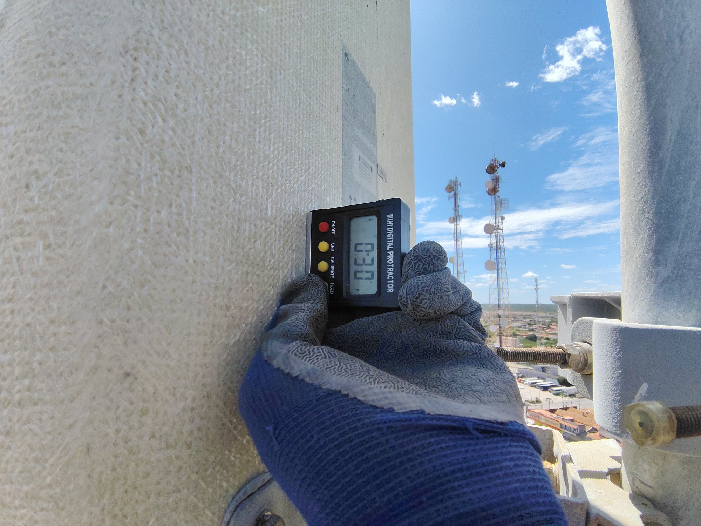
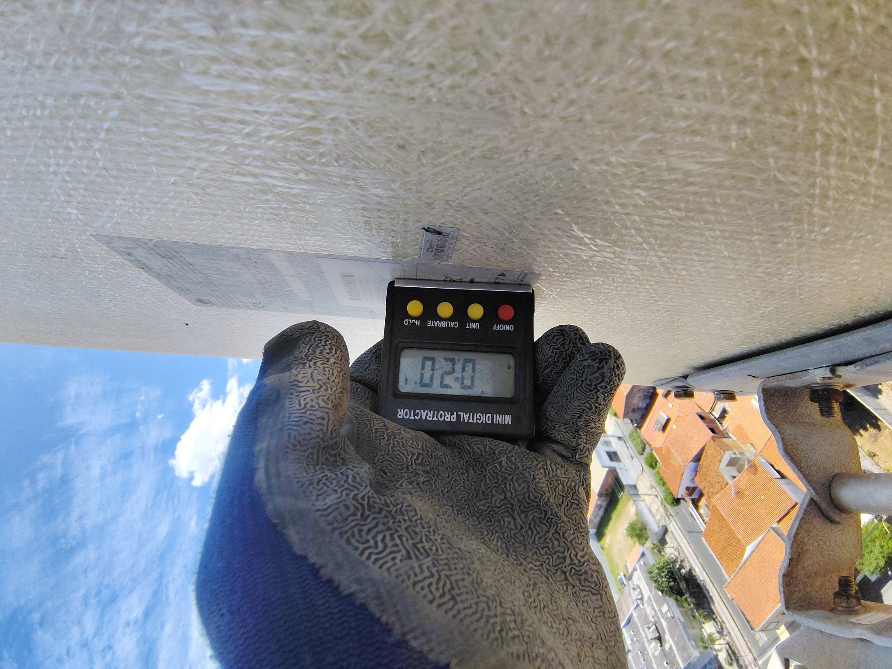
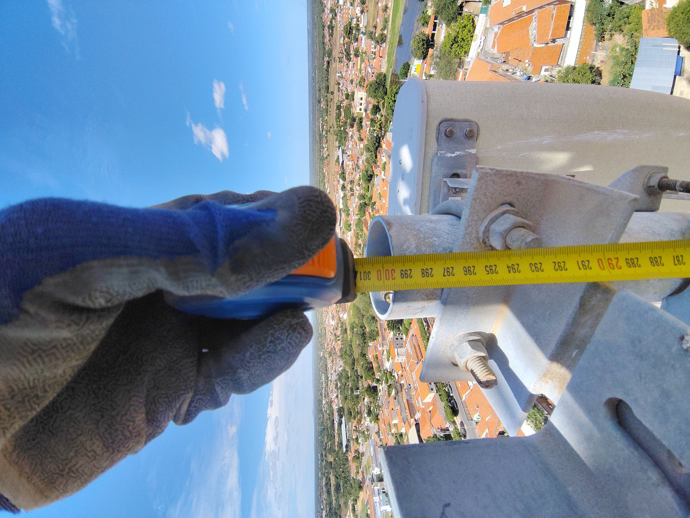

Medição Digital de Inclinação (Tilt)
Uso de inclinômetro digital de alta precisão para aferição de tilt mecânico e azimute de antenas setoriais em torre.

Inspeção Física de Elemento Radiante
Verificação de conexões coaxiais, fixação de substituidores e integridade estrutural de antena celular de operadora (Claro/ANATEL).

Aferição Dimensional Estrutural
Coleta física de medidas em elementos metálicos verticais e suportes mecânicos para elaboração de croqui as-built.